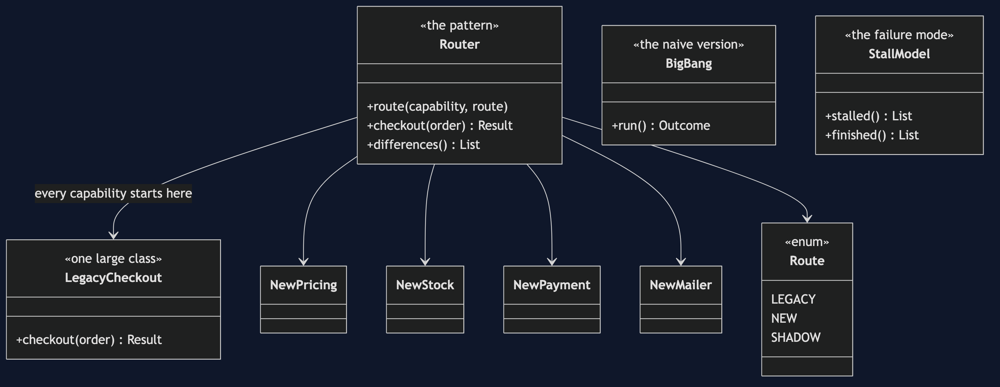
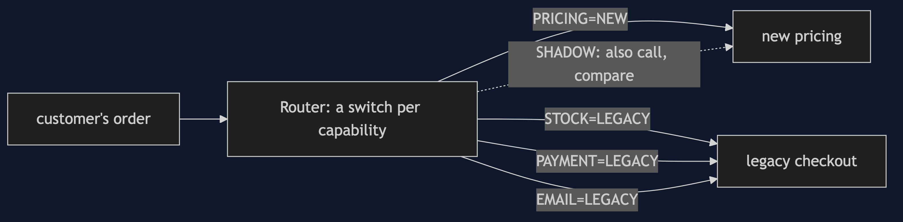
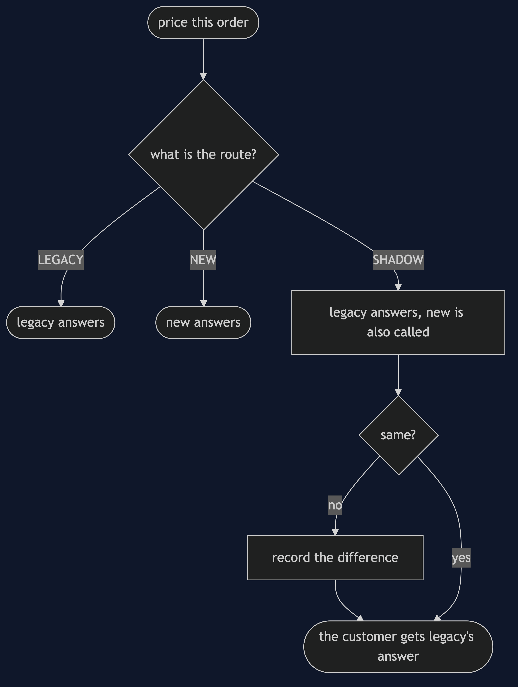
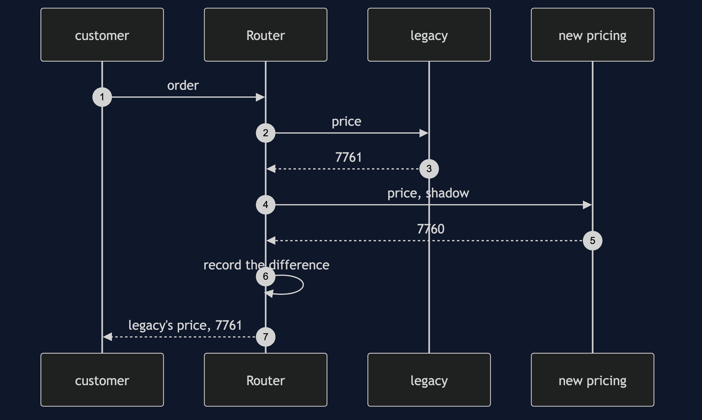
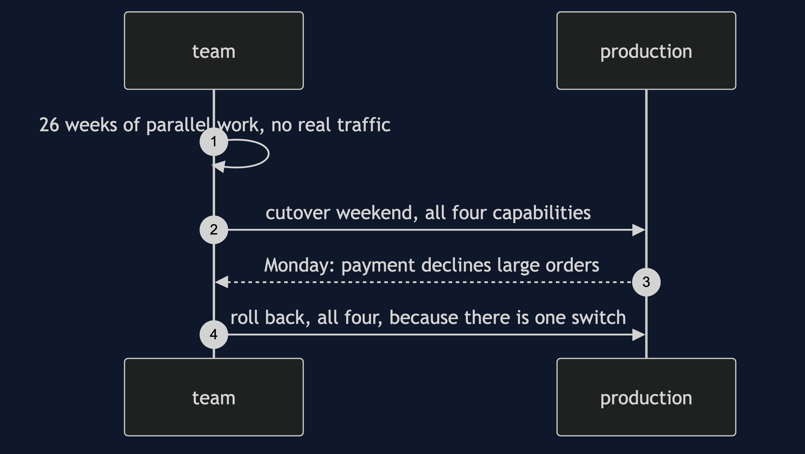
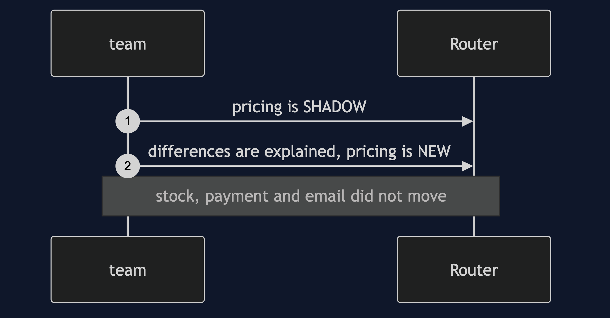
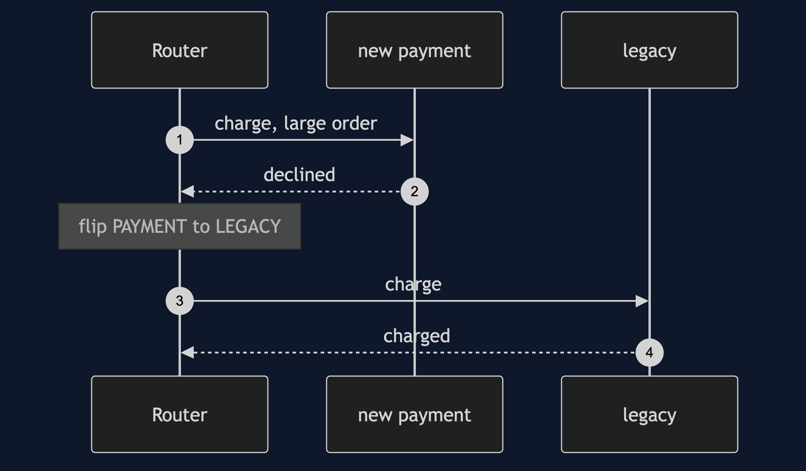
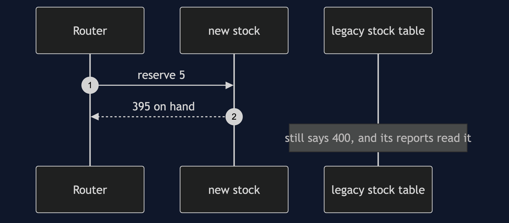

Strangler Fig Pattern
src/main/java/com/jk/explore/stranglerfig/
├── MigrationDemo.java composition root — the six acts
│
├── domain/ ← what the checkout does
│ ├── Order.java Line.java Pricing.java Result.java
│ └── Capability.java Pricer.java StockKeeper.java Payer.java Mailer.java
├── legacy/
│ └── LegacyCheckout.java one large class: pricing, stock, payment and email
├── fresh/ ← the rewrite, one capability at a time
│ ├── NewPricing.java NewStock.java NewPayment.java NewMailer.java
├── route/ ← the pattern
│ ├── Router.java a switch per capability, and shadow reads
│ └── Route.java LEGACY, NEW, or SHADOW
└── migration/
├── BigBang.java the rewrite, and its all-or-nothing Monday
├── Orders.java a fixed-seed stream of orders
└── StallModel.java the migration that stops half-finishedReplace a system by growing the new one around the old, one capability at a time, behind a router that can send each capability to either.
This is the last project in platform-design-patterns, and it reads best after the others: the router is the kind of proxy Sidecar and Backends for Frontends already showed. The subject is the shape of a system as it changes over time. It also names the outcome nobody warns you about: the migration that stalls half-finished.
Run
./gradlew runSix acts. Orders come from a fixed-seed generator, so every count is the same every run. The costs in act six are a stated model, not a measurement.
STRANGLER FIG — replacing the checkout without a cutover weekend
ONE. The big-bang rewrite.
26 weeks of work in parallel with production. orders the new code served in that time: 0.
no feedback from real traffic for half a year, and then a cutover weekend.
Monday: 1 of 4 capabilities is faulty: payment declines large orders.
the only rollback is all-or-nothing, so 4 of 4 go back, including the three that were fine.
TWO. The pattern: a router, and one switch per capability.
every capability starts on the legacy checkout: PRICING=LEGACY STOCK=LEGACY PAYMENT=LEGACY EMAIL=LEGACY
pricing moves first: PRICING=NEW STOCK=LEGACY PAYMENT=LEGACY EMAIL=LEGACY
an order through the router: priced by the new code, everything else by legacy. succeeded: true
the customer saw no cutover. the checkout never stopped.
THREE. Shadow reads: move on evidence, not on hope.
201 orders served by legacy, and priced by the new code as well, and compared.
they disagreed on 29. the first three:
order 7: legacy Pricing[subtotalPence=6467, vatPence=1294, deliveryPence=0, totalPence=7761], new Pricing[subtotalPence=6467, vatPence=1293, deliveryPence=0, totalPence=7760]
order 12: legacy Pricing[subtotalPence=3794, vatPence=758, deliveryPence=495, totalPence=5047], new Pricing[subtotalPence=3794, vatPence=759, deliveryPence=495, totalPence=5048]
order 23: legacy Pricing[subtotalPence=5427, vatPence=1086, deliveryPence=0, totalPence=6513], new Pricing[subtotalPence=5427, vatPence=1085, deliveryPence=0, totalPence=6512]
two causes, both found before a customer paid a penny differently: VAT rounded per line against once,
and free delivery from fifty pounds against over fifty pounds.
after the team decides to reproduce legacy exactly: 0 differences in 201. now pricing can move.
FOUR. Rollback: one capability, not the whole checkout.
payment is on the new code, and misbehaves on a large order. succeeded: false, charge: null.
one switch flipped: payment alone goes back to legacy. succeeded: true, charge: L-1.
routes now: PRICING=NEW STOCK=LEGACY PAYMENT=LEGACY EMAIL=LEGACY. pricing stayed on the new code the whole time.
FIVE. The bill: two systems, and two versions of the truth.
stock moved to the new service, and an order took 5 of SKU-2.
the new service says 395 on hand. the legacy table, which its reports and its invoices still read, says 400.
two tables claim to be the truth, and someone must decide which, and keep them in step until legacy is gone.
and every business rule that changes while both are live is changed twice: in legacy, and in the new code.
SIX. The failure mode that actually happens: the migration stalls.
a cost model, stated as one. all legacy costs 100 a quarter, all new costs 60. while both are live there is an extra 35 for running two.
quarter stalled: moved running total finished: moved running total
1 1 125 155 1 125 155
2 2 115 145 2 115 145
3 2 115 115 3 105 135
4 2 115 115 4 60 90
5 2 115 115 4 60 60
6 2 115 115 4 60 60
six quarters, cumulative: stalled 760, finished 645.
budget goes elsewhere after quarter 2. two of four capabilities moved, and it stays that way.
the stalled state costs 115 a quarter, more than all legacy (100) and more than all new (60). two checkouts, forever, is worse than either endpoint.
verdict: use it, but treat the end date and the decommissioning of legacy as part of the migration, not a later job.
where you have met this: an API gateway or proxy sending one path to the old service and another to the new.Test
./gradlew test2 test classes, 9 test methods, offline, offline, with nothing installed.
Technologies and versions
| What | Version | Why it is here |
|---|---|---|
| Java | 21 | The repository standard, via the Gradle toolchain block |
| Gradle | 9.2.1 | The wrapper in this directory; no separate install needed |
| JUnit 5 | 5.10.2 | Test runner |
No framework. A hand-built project stays plain Java so the mechanism is the whole lesson.
Learning Material
| Document | What it covers |
|---|---|
docs/problem-statement.md | The legacy checkout, and the big bang |
docs/strangler-fig-pattern-explained.md | The router, shadow reads, the bill, the stall, and the verdict |
docs/class-diagram.md | The types |
docs/architecture-diagram.md | A router with a switch per capability |
docs/data-flow-diagram.md | One capability in shadow mode |
docs/sequence-diagram.md | Written for a listener with the screen off |
docs/uml-diagram.md | Four sequences |
docs/animation.html | The six acts in a browser |
docs/prerequisites.md | What you need to know |
docs/session.md | A one-hour taught session |
docs/spec.md | The generated specification |
docs/youtube.md | Title, description and chapters |
The pattern in one picture

Where each piece sits

How one request moves

Who calls whom, in order

All four sequences




Video
Built from video/scenes.py by video/build_video.sh. The rendered file is not committed; see the repository README for why.
Tier 2: the router as a real nginx
real/ runs the router as nginx in Docker, in front of two real HTTP services that are Tier 1's own classes. It is optional, it is not on the path of ./gradlew test, and real/README.md holds the transcript, captured from a real run. It shows a route moving with a config edit and a reload, and a shadow request reaching the new service, with no container restarted.
cd real && ./demo.shWhere you have already met this
Every "we are moving to the new platform, one team at a time" migration, and every /api/v2 running next to a /api/v1.
When this is too much
For a system small enough to rewrite in a few weeks, the seam and the router cost more than they save.
Where this sits
This is the last project in platform-design-patterns. The router is the kind of proxy Sidecar and Backends for Frontends showed.